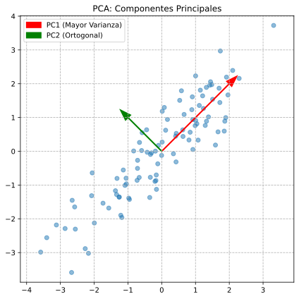

📉 Unidad 5. PCA - Análisis de Componentes Principales
El Análisis de Componentes Principales (PCA, del inglés Principal Component Analysis) es la técnica de reducción de dimensionalidad más utilizada en Machine Learning y estadística. PCA transforma los datos a un nuevo sistema de coordenadas donde las primeras dimensiones (componentes principales) capturan la mayor parte de la varianza de los datos. Es una técnica fundamental para visualización, compresión de datos y preprocesamiento.

5.1. ¿Qué es la Reducción de Dimensionalidad?
El Problema de la Alta Dimensionalidad
En muchos datasets reales, el número de características (dimensiones) puede ser muy alto: - Imágenes: miles de píxeles - Texto: miles de palabras - Genómica: miles de genes - Finanzas: cientos de indicadores
Esto causa varios problemas:
┌─────────────────────────────────────────────────────────────┐
│ PROBLEMAS DE LA ALTA DIMENSIONALIDAD │
├─────────────────────────────────────────────────────────────┤
│ │
│ 1. "MALDICIÓN DE LA DIMENSIONALIDAD" │
│ - Los datos se vuelven muy dispersos │
│ - Las distancias pierden significado │
│ - Aumenta el overfitting │
│ │
│ 2. VISUALIZACIÓN IMPOSIBLE │
│ - No podemos visualizar más de 3 dimensiones │
│ │
│ 3. COSTO COMPUTACIONAL │
│ - Más dimensiones = más tiempo y memoria │
│ │
│ 4. MULTICOLINEALIDAD │
│ - Variables correlacionadas = redundancia │
│ │
└─────────────────────────────────────────────────────────────┘
¿Qué Hace PCA?
PCA encuentra las direcciones de máxima varianza en los datos y proyecta los datos en estas direcciones:
Datos originales (2D) Después de PCA
│ │
y │ ╱╱╱╱ │ ────────
│ ╱╱╱╱ │ PC1 (máxima varianza)
│ ╱╱╱╱ │
└──────── x └────────────
Los datos tienen PC1 captura la dirección
varianza en diagonal de máxima dispersión
5.2. Explicación Matemática
Intuición Geométrica
PCA busca los ejes de máxima varianza: 1. Encontrar la dirección donde los datos están más dispersos → PC1 2. Encontrar la siguiente dirección ortogonal con máxima varianza → PC2 3. Repetir hasta tener d componentes (d = dimensiones originales)
Pasos Matemáticos
Paso 1: Centrar los Datos
Restar la media de cada variable para que los datos estén centrados en el origen:
Donde \(\bar{X}\) es el vector de medias de cada columna.
Paso 2: Calcular la Matriz de Covarianza
La matriz de covarianza \(\Sigma\) captura las relaciones entre variables:
Para dos variables \(x\) y \(y\): $\(Cov(x, y) = \frac{1}{n-1} \sum_{i=1}^{n} (x_i - \bar{x})(y_i - \bar{y})\)$
La matriz de covarianza es de tamaño \(d \times d\) (donde \(d\) = número de variables):
Paso 3: Calcular Autovalores y Autovectores
Los autovectores de \(\Sigma\) son las direcciones de los componentes principales. Los autovalores correspondientes indican cuánta varianza captura cada componente.
Donde: - \(v\) = autovector (dirección del componente principal) - \(\lambda\) = autovalor (varianza explicada por ese componente)
Paso 4: Ordenar y Seleccionar Componentes
Los componentes se ordenan por autovalor descendente: - \(\lambda_1 \geq \lambda_2 \geq ... \geq \lambda_d\) - PC1 tiene el mayor autovalor, PC2 el segundo, etc.
Paso 5: Proyectar los Datos
Para reducir de \(d\) dimensiones a \(k\) dimensiones:
Donde \(W_k\) es la matriz de los \(k\) primeros autovectores (columnas).
Varianza Explicada
La varianza explicada por cada componente es:
La varianza acumulada indica cuánta información total preservamos:
5.3. Pros y Contras
| Ventajas | Desventajas |
|---|---|
| Reducción efectiva: Elimina redundancia y ruido | Transformación lineal: No captura relaciones no lineales |
| Visualización: Permite visualizar datos de alta dimensión | Pérdida de información: Los componentes descartados contienen algo de información |
| Decorrelación: Los componentes son ortogonales (no correlacionados) | Difícil interpretación: Los componentes son combinaciones de todas las variables |
| Sin hiperparámetros: Solo decidir cuántos componentes mantener | Sensible a escala: Requiere estandarización previa |
| Eficiente: Complejidad \(O(nd^2 + d^3)\) | Sensible a outliers: Los outliers afectan la dirección de máxima varianza |
5.4. Ejemplo Básico en Python
Este ejemplo muestra cómo aplicar PCA para visualizar datos de alta dimensión.
# ============================================================
# EJEMPLO BÁSICO: PCA para visualización del dataset Iris
# ============================================================
# Importar bibliotecas necesarias
import numpy as np # Operaciones numéricas
import matplotlib.pyplot as plt # Visualización
from sklearn.decomposition import PCA # Algoritmo PCA
from sklearn.preprocessing import StandardScaler # Estandarización
from sklearn.datasets import load_iris # Dataset de ejemplo
# -------------------------------------------------------------
# 1. CARGAR DATOS
# -------------------------------------------------------------
iris = load_iris()
X = iris.data # 150 muestras × 4 características
y = iris.target # Etiquetas de especie
feature_names = iris.feature_names
target_names = iris.target_names
print("="*50)
print("PCA - EJEMPLO BÁSICO CON DATASET IRIS")
print("="*50)
print(f"\nDimensiones originales: {X.shape}")
print(f"Features: {feature_names}")
# -------------------------------------------------------------
# 2. ESTANDARIZAR LOS DATOS (CRUCIAL)
# -------------------------------------------------------------
# PCA es sensible a la escala, por lo que SIEMPRE debemos estandarizar
scaler = StandardScaler()
X_scaled = scaler.fit_transform(X)
print(f"\nDatos estandarizados:")
print(f" Media por feature: {X_scaled.mean(axis=0).round(4)}")
print(f" Std por feature: {X_scaled.std(axis=0).round(4)}")
# -------------------------------------------------------------
# 3. APLICAR PCA
# -------------------------------------------------------------
# Reducir de 4 dimensiones a 2 para poder visualizar
pca = PCA(n_components=2) # Mantener solo 2 componentes
# fit_transform: calcula los componentes y transforma los datos
X_pca = pca.fit_transform(X_scaled)
print(f"\nDimensiones después de PCA: {X_pca.shape}")
# -------------------------------------------------------------
# 4. ANALIZAR LOS COMPONENTES PRINCIPALES
# -------------------------------------------------------------
# explained_variance_ratio_: proporción de varianza explicada por cada componente
print(f"\nVarianza explicada por componente:")
for i, var in enumerate(pca.explained_variance_ratio_):
print(f" PC{i+1}: {var*100:.2f}%")
print(f" Total: {sum(pca.explained_variance_ratio_)*100:.2f}%")
# explained_variance_: autovalores (varianza absoluta)
print(f"\nAutovalores (varianza absoluta):")
for i, var in enumerate(pca.explained_variance_):
print(f" PC{i+1}: {var:.4f}")
# components_: autovectores (direcciones de los componentes)
# Cada fila es un componente, cada columna es el peso de esa variable original
print(f"\nAutovectores (componentes_):")
print(f"Formato: [sepal_length, sepal_width, petal_length, petal_width]")
for i, comp in enumerate(pca.components_):
print(f" PC{i+1}: {comp.round(4)}")
# -------------------------------------------------------------
# 5. VISUALIZAR LOS DATOS REDUCIDOS
# -------------------------------------------------------------
plt.figure(figsize=(10, 8))
# Crear scatter plot coloreado por especie
colors = ['navy', 'turquoise', 'darkorange']
for i, (color, name) in enumerate(zip(colors, target_names)):
mask = y == i
plt.scatter(X_pca[mask, 0], X_pca[mask, 1],
c=color, label=name, alpha=0.7, edgecolors='w', s=60)
plt.xlabel(f'PC1 ({pca.explained_variance_ratio_[0]*100:.1f}% varianza)', fontsize=12)
plt.ylabel(f'PC2 ({pca.explained_variance_ratio_[1]*100:.1f}% varianza)', fontsize=12)
plt.title('PCA del Dataset Iris (4D → 2D)', fontsize=14)
plt.legend(loc='best')
plt.grid(True, alpha=0.3)
# Añadir vectores de carga (loadings) para interpretar los componentes
# Los loadings muestran cómo contribuye cada variable a cada componente
for i, (var, name) in enumerate(zip(pca.components_.T, feature_names)):
plt.annotate('', xy=(var[0]*3, var[1]*3), xytext=(0, 0),
arrowprops=dict(arrowstyle='->', color='red', lw=2))
plt.text(var[0]*3.2, var[1]*3.2, name.replace(' (cm)', ''),
fontsize=10, color='red', ha='center')
plt.tight_layout()
plt.show()
# -------------------------------------------------------------
# 6. INTERPRETACIÓN DE LOS COMPONENTES
# -------------------------------------------------------------
print("\n" + "="*50)
print("INTERPRETACIÓN DE LOS COMPONENTES")
print("="*50)
# Crear DataFrame de loadings para mejor visualización
import pandas as pd
loadings = pd.DataFrame(
pca.components_.T,
columns=['PC1', 'PC2'],
index=feature_names
)
print("\nLoadings (contribución de cada variable):")
print(loadings.round(4))
print("""
Interpretación:
- PC1: Combinación principalmente de petal_length y petal_width (tamaño del pétalo)
Variables con signos similares y magnitudes altas.
- PC2: Contrasta sepal_width contra las demás (forma del sépalo vs resto)
sepal_width tiene signo opuesto a las otras variables.
""")
5.5. Ejemplo Avanzado: Selección de Componentes y Reconstrucción
Este ejemplo muestra cómo elegir el número óptimo de componentes y cómo reconstruir los datos.
# ============================================================
# EJEMPLO AVANZADO: PCA completo con análisis de varianza
# ============================================================
import numpy as np
import pandas as pd
import matplotlib.pyplot as plt
from sklearn.decomposition import PCA
from sklearn.preprocessing import StandardScaler
from sklearn.datasets import fetch_openml
# -------------------------------------------------------------
# 1. CARGAR DATOS DE ALTA DIMENSIONALIDAD (MNIST)
# -------------------------------------------------------------
print("="*60)
print("PCA AVANZADO - DATASET MNIST (DÍGITOS)")
print("="*60)
print("\nCargando datos... (puede tardar un momento)")
# Cargar un subconjunto de MNIST para eficiencia
from sklearn.datasets import load_digits
digits = load_digits()
X = digits.data # 1797 muestras × 64 píxeles (8×8)
y = digits.target
print(f"\nDimensiones originales: {X.shape}")
print(f"Cada imagen es de {int(np.sqrt(X.shape[1]))}×{int(np.sqrt(X.shape[1]))} píxeles")
# -------------------------------------------------------------
# 2. ESTANDARIZAR
# -------------------------------------------------------------
scaler = StandardScaler()
X_scaled = scaler.fit_transform(X)
# -------------------------------------------------------------
# 3. PCA COMPLETO PARA ANÁLISIS DE VARIANZA
# -------------------------------------------------------------
# Primero, ajustar PCA con todos los componentes para analizar varianza
pca_full = PCA() # n_components=None → todos los componentes
pca_full.fit(X_scaled)
# Varianza explicada por cada componente
var_ratio = pca_full.explained_variance_ratio_
var_cumsum = np.cumsum(var_ratio)
print(f"\nVarianza explicada por los primeros 10 componentes:")
for i in range(10):
print(f" PC{i+1}: {var_ratio[i]*100:.2f}% (acumulada: {var_cumsum[i]*100:.2f}%)")
# -------------------------------------------------------------
# 4. VISUALIZAR VARIANZA EXPLICADA
# -------------------------------------------------------------
fig, axes = plt.subplots(1, 2, figsize=(14, 5))
# Gráfico de varianza individual
ax1 = axes[0]
ax1.bar(range(1, len(var_ratio)+1), var_ratio, alpha=0.6, label='Individual')
ax1.set_xlabel('Componente Principal')
ax1.set_ylabel('Proporción de Varianza Explicada')
ax1.set_title('Varianza Explicada por Componente')
ax1.set_xlim([0, 30])
ax1.legend()
ax1.grid(True, alpha=0.3)
# Gráfico de varianza acumulada
ax2 = axes[1]
ax2.plot(range(1, len(var_cumsum)+1), var_cumsum, 'bo-', markersize=4)
ax2.axhline(y=0.90, color='r', linestyle='--', label='90% varianza')
ax2.axhline(y=0.95, color='g', linestyle='--', label='95% varianza')
ax2.axhline(y=0.99, color='orange', linestyle='--', label='99% varianza')
# Encontrar número de componentes para diferentes umbrales
n_90 = np.argmax(var_cumsum >= 0.90) + 1
n_95 = np.argmax(var_cumsum >= 0.95) + 1
n_99 = np.argmax(var_cumsum >= 0.99) + 1
ax2.axvline(x=n_90, color='r', linestyle=':', alpha=0.5)
ax2.axvline(x=n_95, color='g', linestyle=':', alpha=0.5)
ax2.axvline(x=n_99, color='orange', linestyle=':', alpha=0.5)
ax2.set_xlabel('Número de Componentes')
ax2.set_ylabel('Varianza Acumulada')
ax2.set_title('Varianza Acumulada')
ax2.legend(loc='lower right')
ax2.grid(True, alpha=0.3)
ax2.set_xlim([0, 64])
plt.tight_layout()
plt.show()
print(f"\nComponentes necesarios para:")
print(f" 90% varianza: {n_90} componentes")
print(f" 95% varianza: {n_95} componentes")
print(f" 99% varianza: {n_99} componentes")
# -------------------------------------------------------------
# 5. REDUCCIÓN A 2D PARA VISUALIZACIÓN
# -------------------------------------------------------------
pca_2d = PCA(n_components=2)
X_2d = pca_2d.fit_transform(X_scaled)
plt.figure(figsize=(12, 10))
scatter = plt.scatter(X_2d[:, 0], X_2d[:, 1], c=y, cmap='tab10',
alpha=0.6, edgecolors='w', s=20)
plt.xlabel(f'PC1 ({pca_2d.explained_variance_ratio_[0]*100:.1f}%)')
plt.ylabel(f'PC2 ({pca_2d.explained_variance_ratio_[1]*100:.1f}%)')
plt.title('Dígitos MNIST Proyectados a 2D con PCA')
plt.colorbar(scatter, label='Dígito')
plt.grid(True, alpha=0.3)
plt.show()
# -------------------------------------------------------------
# 6. RECONSTRUCCIÓN DE IMÁGENES
# -------------------------------------------------------------
print("\n" + "="*60)
print("RECONSTRUCCIÓN DE IMÁGENES")
print("="*60)
# Función para reconstruir y visualizar
def reconstruct_and_show(X, pca, scaler, n_components_list, sample_idx=0):
"""
Reconstruye una imagen con diferente número de componentes.
"""
original = X[sample_idx].reshape(8, 8)
fig, axes = plt.subplots(1, len(n_components_list)+1, figsize=(15, 3))
# Imagen original
axes[0].imshow(original, cmap='gray')
axes[0].set_title(f'Original\n(64 dims)')
axes[0].axis('off')
X_sample = X[sample_idx:sample_idx+1]
X_scaled = scaler.transform(X_sample)
for i, n_comp in enumerate(n_components_list):
# Ajustar PCA con n componentes
pca_temp = PCA(n_components=n_comp)
pca_temp.fit(scaler.transform(X))
# Transformar y reconstruir
X_reduced = pca_temp.transform(X_scaled)
X_reconstructed = pca_temp.inverse_transform(X_reduced)
X_reconstructed = scaler.inverse_transform(X_reconstructed)
# Calcular error de reconstrucción
mse = np.mean((X_sample - X_reconstructed)**2)
# Mostrar
axes[i+1].imshow(X_reconstructed.reshape(8, 8), cmap='gray')
axes[i+1].set_title(f'{n_comp} componentes\nMSE: {mse:.2f}')
axes[i+1].axis('off')
plt.suptitle('Reconstrucción con Diferente Número de Componentes', fontsize=14)
plt.tight_layout()
plt.show()
# Reconstruir el primer dígito con diferentes componentes
n_components_list = [2, 5, 10, 20, 40]
reconstruct_and_show(X, pca_full, scaler, n_components_list, sample_idx=0)
print("\nObservación: Con ~20 componentes ya se obtiene una buena reconstrucción")
print("del dígito original, a pesar de reducir de 64 a 20 dimensiones (~70% compresión)")
# -------------------------------------------------------------
# 7. VISUALIZAR LOS COMPONENTES PRINCIPALES (EIGENFACES)
# -------------------------------------------------------------
print("\n" + "="*60)
print("COMPONENTES PRINCIPALES COMO IMÁGENES")
print("="*60)
fig, axes = plt.subplots(2, 5, figsize=(15, 6))
axes = axes.flatten()
for i in range(10):
# Cada componente se puede visualizar como una imagen
component = pca_full.components_[i].reshape(8, 8)
axes[i].imshow(component, cmap='RdBu')
axes[i].set_title(f'PC{i+1}\n({var_ratio[i]*100:.1f}%)')
axes[i].axis('off')
plt.suptitle('Primeros 10 Componentes Principales (como imágenes 8×8)', fontsize=14)
plt.tight_layout()
plt.show()
print("Los primeros componentes capturan patrones globales (bordes, formas)")
print("Los componentes posteriores capturan detalles más finos")
# -------------------------------------------------------------
# 8. PCA COMO PREPROCESAMIENTO PARA CLASIFICACIÓN
# -------------------------------------------------------------
print("\n" + "="*60)
print("PCA COMO PREPROCESAMIENTO PARA ML")
print("="*60)
from sklearn.model_selection import train_test_split
from sklearn.neighbors import KNeighborsClassifier
from sklearn.metrics import accuracy_score
import time
# Dividir datos
X_train, X_test, y_train, y_test = train_test_split(
X_scaled, y, test_size=0.3, random_state=42
)
# Comparar rendimiento con diferentes niveles de reducción
results = []
for n_comp in [None, 40, 20, 10, 5, 2]:
if n_comp is None:
# Sin reducción
X_train_pca = X_train
X_test_pca = X_test
n_dims = X_train.shape[1]
else:
# Con PCA
pca = PCA(n_components=n_comp)
X_train_pca = pca.fit_transform(X_train)
X_test_pca = pca.transform(X_test)
n_dims = n_comp
# Entrenar clasificador
knn = KNeighborsClassifier(n_neighbors=5)
start_time = time.time()
knn.fit(X_train_pca, y_train)
y_pred = knn.predict(X_test_pca)
elapsed = time.time() - start_time
acc = accuracy_score(y_test, y_pred)
results.append({
'Dimensiones': n_dims,
'Accuracy': acc,
'Tiempo (s)': elapsed
})
df_results = pd.DataFrame(results)
print("\nRendimiento de KNN con diferentes niveles de reducción:")
print(df_results.to_string(index=False))
# Visualizar
fig, ax = plt.subplots(figsize=(10, 6))
ax.plot(df_results['Dimensiones'], df_results['Accuracy'], 'bo-', markersize=10)
ax.set_xlabel('Número de Dimensiones (componentes)')
ax.set_ylabel('Accuracy')
ax.set_title('Accuracy vs Dimensionalidad (KNN con PCA)')
ax.invert_xaxis() # Invertir eje x para mejor lectura
ax.grid(True, alpha=0.3)
plt.show()
print("""
Conclusión:
- PCA puede reducir significativamente las dimensiones manteniendo buen rendimiento
- Menos dimensiones = entrenamiento/predicción más rápido
- Hay un punto óptimo donde reducimos complejidad sin perder mucha precisión
""")
# -------------------------------------------------------------
# 9. PCA INCREMENTAL PARA DATASETS GRANDES
# -------------------------------------------------------------
print("\n" + "="*60)
print("VARIANTES DE PCA")
print("="*60)
print("""
scikit-learn ofrece varias implementaciones de PCA:
1. PCA (estándar):
- Usa SVD completo
- Para datasets que caben en memoria
- from sklearn.decomposition import PCA
2. IncrementalPCA:
- Procesa datos en batches
- Para datasets muy grandes que no caben en memoria
- from sklearn.decomposition import IncrementalPCA
3. SparsePCA:
- Produce componentes con muchos ceros (sparse)
- Mejor interpretabilidad
- from sklearn.decomposition import SparsePCA
4. KernelPCA:
- PCA no lineal usando kernels
- Para relaciones no lineales en los datos
- from sklearn.decomposition import KernelPCA
""")
# Ejemplo de KernelPCA
from sklearn.decomposition import KernelPCA
from sklearn.datasets import make_moons
# Datos no linealmente separables
X_moons, y_moons = make_moons(n_samples=200, noise=0.05, random_state=42)
fig, axes = plt.subplots(1, 3, figsize=(15, 4))
# Original
axes[0].scatter(X_moons[:, 0], X_moons[:, 1], c=y_moons, cmap='viridis')
axes[0].set_title('Datos Originales')
# PCA lineal
pca_linear = PCA(n_components=2)
X_pca_linear = pca_linear.fit_transform(X_moons)
axes[1].scatter(X_pca_linear[:, 0], X_pca_linear[:, 1], c=y_moons, cmap='viridis')
axes[1].set_title('PCA Lineal (igual que original)')
# Kernel PCA (RBF)
kpca = KernelPCA(n_components=2, kernel='rbf', gamma=15)
X_kpca = kpca.fit_transform(X_moons)
axes[2].scatter(X_kpca[:, 0], X_kpca[:, 1], c=y_moons, cmap='viridis')
axes[2].set_title('Kernel PCA (RBF)')
plt.tight_layout()
plt.show()
print("KernelPCA puede capturar relaciones no lineales que PCA estándar no puede")
print("\n" + "="*60)
print("ANÁLISIS COMPLETADO")
print("="*60)
5.6. Hiperparámetros de PCA en scikit-learn
| Parámetro | Descripción | Valores | Recomendación |
|---|---|---|---|
n_components |
Número de componentes a mantener | int, float, 'mle', None | Ver nota abajo |
svd_solver |
Algoritmo para calcular SVD | 'auto', 'full', 'arpack', 'randomized' | 'auto' para la mayoría de casos |
whiten |
Si blanquear los datos (varianza unitaria) | True/False | True si se usa para clasificación |
random_state |
Semilla para svd_solver='randomized' | int o None | Fijar para reproducibilidad |
Especificar n_components
# Formas de especificar n_components:
# 1. Número exacto de componentes
pca = PCA(n_components=10) # Exactamente 10 componentes
# 2. Proporción de varianza a preservar (0-1)
pca = PCA(n_components=0.95) # Componentes para retener 95% de varianza
# 3. Estimación automática con MLE
pca = PCA(n_components='mle') # Estimación de máxima verosimilitud
# 4. Todos los componentes
pca = PCA(n_components=None) # min(n_samples, n_features) componentes
5.7. Aplicaciones Reales de PCA
1. Compresión de Imágenes
- Eigenfaces: Reconocimiento facial con dimensionalidad reducida
- Tutorial: Eigenfaces
2. Visualización de Datos
Proyectar datos de alta dimensión a 2D/3D para exploración.
3. Preprocesamiento para ML
- Reducir overfitting al eliminar features redundantes
- Acelerar el entrenamiento de modelos
- Eliminar multicolinealidad
4. Análisis de Expresión Génica
Identificar genes importantes y visualizar grupos de muestras.
5. Finanzas
- Análisis de portafolio (factores de riesgo)
- Detección de patrones en series financieras
- Tutorial: PCA in Finance
5.8. PCA vs Otras Técnicas
| Técnica | Tipo | Preserva | Mejor para |
|---|---|---|---|
| PCA | Lineal | Varianza global | Datos lineales, preprocesamiento |
| t-SNE | No lineal | Estructura local | Visualización de clusters |
| UMAP | No lineal | Estructura local + global | Visualización + ML |
| LDA | Supervisado | Separabilidad de clases | Clasificación |
| Autoencoders | No lineal | Representación aprendida | Relaciones complejas |
5.9. Resumen y Mejores Prácticas
Checklist para usar PCA
- [ ] Estandarizar los datos (StandardScaler) - ¡Obligatorio!
- [ ] Analizar la varianza explicada para elegir n_components
- [ ] Usar 95% de varianza como regla general
- [ ] Visualizar loadings para interpretar componentes
- [ ] Verificar que la reducción no afecta negativamente el modelo downstream
- [ ] Considerar alternativas no lineales si PCA no funciona bien
¿Cuándo usar PCA?
✅ Usar PCA cuando: - Los datos tienen alta dimensionalidad - Hay multicolinealidad entre variables - Necesitas visualizar datos multidimensionales - Quieres preprocesar para acelerar ML - Las relaciones son aproximadamente lineales
❌ Considerar alternativas cuando: - Las relaciones son altamente no lineales → Kernel PCA, Autoencoders - Necesitas visualización con clusters claros → t-SNE, UMAP - Tienes un problema de clasificación → LDA
📅 Fecha de creación: Enero 2026
✍️ Autor: Fran García